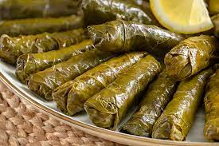

Yaprak sarması

Yaprak sarması ya da Yaprak dolması, bulgur ya da pirinç başta olmak üzere çeşitli iç malzemelerin, genellikle beyaz lahana, kara lahana, dut yaprağı, kiraz yaprağı veya asma yaprağıyla sarılmasıyla yapılan bir yiyecek. Osmanlı mutfağı kökenli olup, Osmanlı İmparatorluğu'nun hüküm sürdüğü topraklarda yapılmaktadır. Üzüm yaprağıyla olanı Tokat, Ege mutfağına özgü olan Zeytinyağlı sarma ya da kıymalı sarma şeklinde farklı çeşitleri vardır.
- Yaprak Sarması Tarifi İçin Malzemeler
- 500 gram tokat yaprağı (salamura)
- 1 adet limon
- Zeytinyağı
- İç harcı;
- 2 orta boy kuru soğan
- 1.5 su bardağı pirinç
- Maydanoz
- 1 yemek kaşığı salça
- Karabşber
- Kırmızı pul biber
- Kimyon
- Nane
- Tuz
- 2 yemek kaşığı sıvıyağ
Yaprak sarması nasıl yapılır
- Öncelikle salamura yapraklar 2-3 dakika sıcak suda bekletilir, yıkanır ve süzgece alınır.
- Geniş bir kabın içerisine soğanlar rendelenir üzerine zeytinyağı dökülür.
- Pirinç yıkanarak kabın içerisine eklenir
- Baharatlar, salça ve tuzu da ilave edildikten sonra ince kıyılmış maydanozu da eklenerek karıştırılır.(çiğden bir iç harç olacak)
- Yaprağın geniş kısmına iç harçtan konulur ve rulo gibi iki yanlardan kapatarak sarılır. Bu işleme yaprak bitene kadar devam edilir.
- Sardığımız yaprakların üzerine zeytinyağı ve limon dilimleri ekleyip yaklaşık 5-6 su bardağı kadar da sıcak su ilave edilerek kısık ateşte pişirilir.(üzerine sarmalar dağılmasın diye tencere kapağından biraz küçük ebatta bir kase kapatabilirsiniz.)